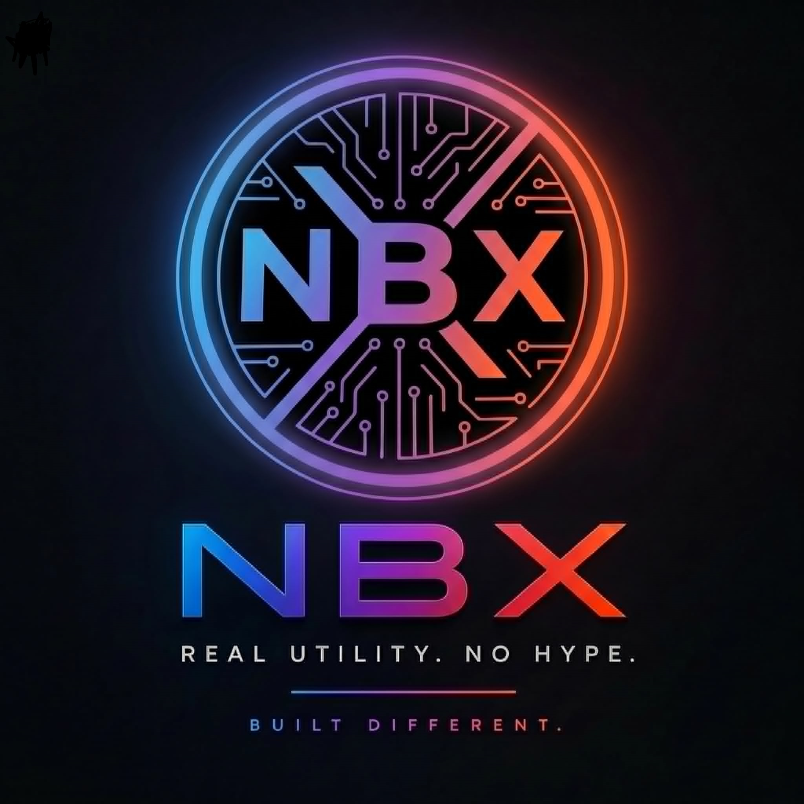

NBX is the core execution layer of the NEBULA-X ecosystem, engineered to provide institutional transparency and decentralized asset management on the Waves Network.
Our governance philosophy is built on immutability. Every ecosystem module is designed to operate without intermediaries, bringing institutional security directly on-chain.